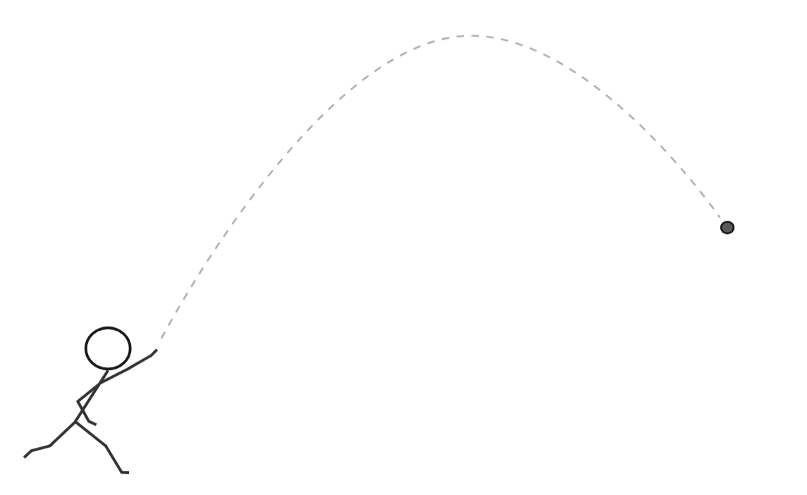
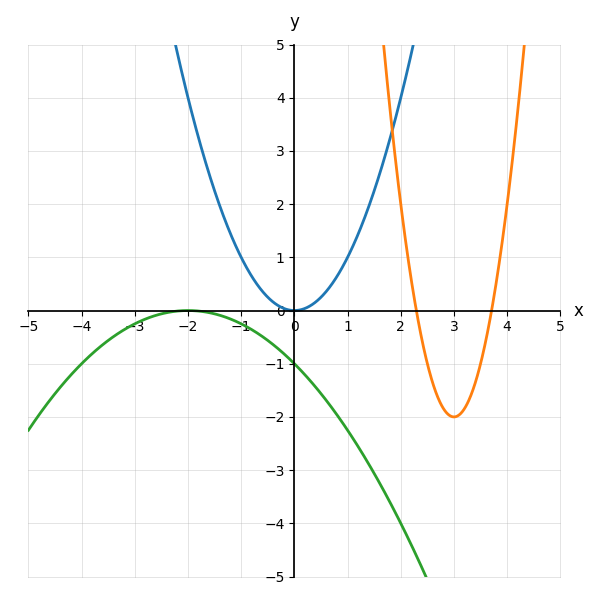
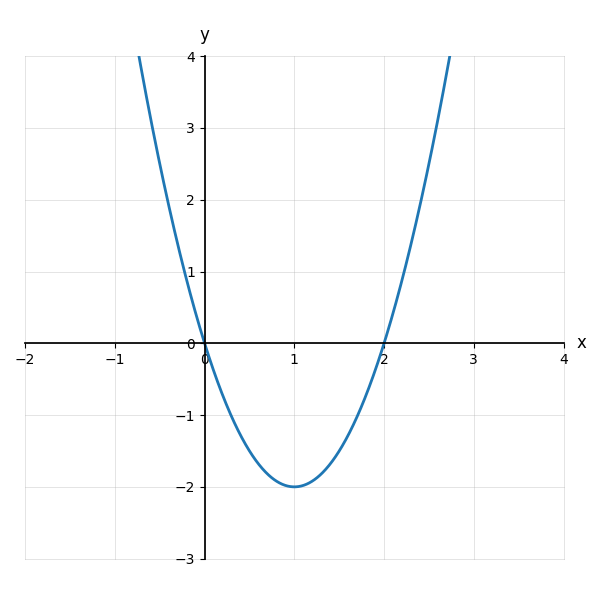
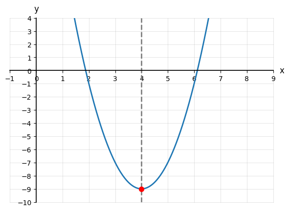
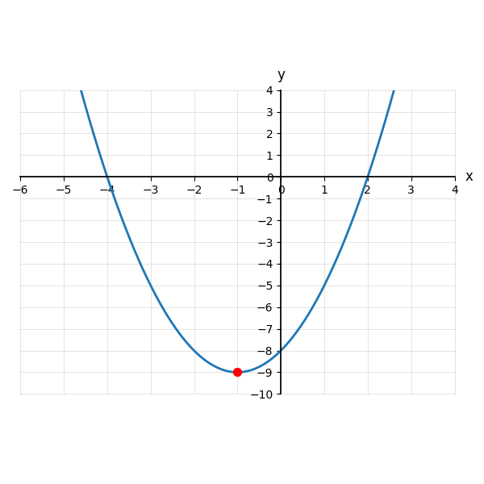
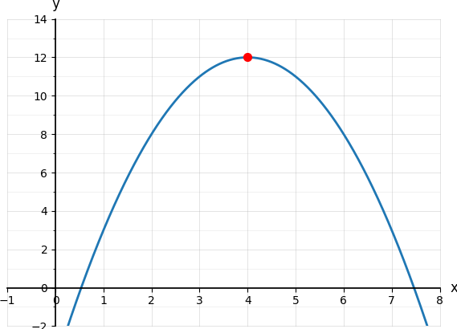
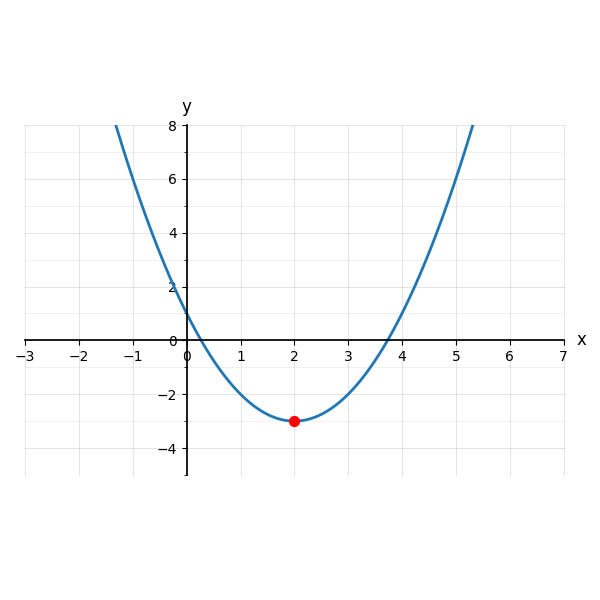
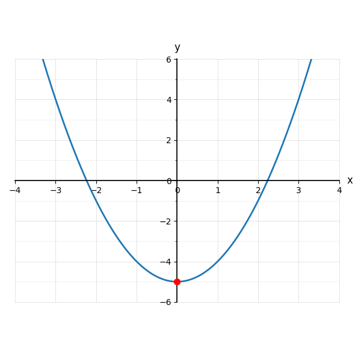
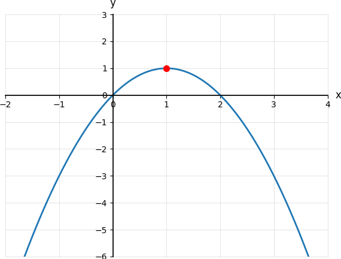

1. Find the degree of x3 − 3x4 + 2x2 − x + 42.
{{a}}4
{{/a}}2. A line has equation x = 5. What kind of line is it? What is its slope?
{{a}}A vertical line; its slope is undefined.
{{/a}}3. Plot (−1, 3), (0, 1), (1, 5). Could these come from a linear function?
{{grid-sm}}
Highest power: {{a}}2{{/a}}
{{a}}yes, quadratic{{/a}}
Highest power: {{a}}1{{/a}}
{{a}}no, linear{{/a}}
Highest power: {{a}}3{{/a}}
{{a}}no, cubic{{/a}}
| Function | Degree | Quadratic? What is it? |
|---|---|---|
| p(x) = 4x2 + 6 | {{a}}2{{/a}} | {{a}}yes, quadratic{{/a}} |
| q(x) = 10 − x | {{a}}1{{/a}} | {{a}}no, linear{{/a}} |
| r(x) = x2 − x3 | {{a}}3{{/a}} | {{a}}no, cubic{{/a}} |
| s(x) = −3x2 + 7x − 1 | {{a}}2{{/a}} | {{a}}yes, quadratic{{/a}} |
| t(x) = 4 | {{a}}0{{/a}} | {{a}}no, constant{{/a}} |

Opens {{a}}upward{{/a}}
Opens {{a}}downward{{/a}}
Opens {{a}}upward{{/a}}
Opens {{a}}downward{{/a}}
The vertex is a {{a}}maximum{{/a}}
Opens {{a}}upward{{/a}}
The vertex is a {{a}}minimum{{/a}}
Axis of symmetry: {{a}}x = −2{{/a}}

Opens: {{a}}upward{{/a}}
Vertex: {{a}}(1, −2){{/a}}
Axis of symmetry: {{a}}x = 1{{/a}}
Domain: {{a}}all real numbers{{/a}}
Range: {{a}}[−1, ∞){{/a}}
Range: {{a}}(−∞, 2]{{/a}}

Opens: {{a}}upward{{/a}}
Vertex: {{a}}(4, −9){{/a}}
Axis of symmetry: {{a}}x = 4{{/a}}
Domain: {{a}}all real numbers{{/a}}
Range: {{a}}[−9, ∞){{/a}}
1. A quadratic function has degree {{a}}2{{/a}}.
2. The graph of a quadratic function is a U-shaped curve called a {{a}}parabola{{/a}}.
3. In f(x) = −x2 + 4x + 7, the coefficient of x2 is negative. So the parabola opens {{a}}downward{{/a}}, and its vertex is a {{a}}maximum{{/a}}.
4. The vertex of y = 2x2 − 4x is (1, −2). Its axis of symmetry is x = {{a}}1{{/a}}.
5. The domain of every quadratic function is all {{a}}real{{/a}} numbers.
| Equation | Quadratic? | Why |
|---|---|---|
| 1. y = 4x2 − 3x + 1 | {{a}}yes{{/a}} | {{a}}degree 2{{/a}} |
| 2. y = (x − 6)2 − 2 | {{a}}yes{{/a}} | {{a}}expands to degree 2{{/a}} |
| 3. y = x3 − 5x | {{a}}no{{/a}} | {{a}}degree 3 - cubic{{/a}} |
| 4. y = −2x2 | {{a}}yes{{/a}} | {{a}}degree 2{{/a}} |
| 5. y = 12x + 9 | {{a}}no{{/a}} | {{a}}degree 1 - linear{{/a}} |
6. y = −3x2 + 4 {{a}}downward, a < 0{{/a}}
7. y = 0.2x2 − 8 {{a}}upward, a > 0{{/a}}
8. y = −(x − 1)2 + 7 {{a}}downward, a < 0{{/a}}
9. y = 5x2 {{a}}upward, a > 0{{/a}}
10. y = −0.5x2 − 12 {{a}}downward, a < 0{{/a}}
11. A parabola opens upward with lowest point (4, 3). Vertex: {{a}}(4, 3){{/a}} Axis: {{a}}x = 4{{/a}}
12. A parabola opens downward with highest point (−1, −5). Vertex: {{a}}(−1, −5){{/a}} Axis: {{a}}x = −1{{/a}}
13. A parabola opens upward with vertex (2, −6). Axis: {{a}}x = 2{{/a}}
14. A parabola opens downward with axis x = −3. One possible vertex: {{a}}(−3, k) for any k{{/a}}
15. A parabola has vertex (0, 4) and opens downward. Max or min? {{a}}a maximum{{/a}}
16.

Vertex {{a}}(−1, −9){{/a}} Axis {{a}}x = −1{{/a}}
Domain {{a}}(−∞, ∞){{/a}} Range {{a}}[−9, ∞){{/a}}
17.

Vertex {{a}}(4, 12){{/a}} Axis {{a}}x = 4{{/a}}
Domain {{a}}(−∞, ∞){{/a}} Range {{a}}(−∞, 12]{{/a}}
18.

Vertex {{a}}(2, −3){{/a}} Axis {{a}}x = 2{{/a}}
Domain {{a}}(−∞, ∞){{/a}} Range {{a}}[−3, ∞){{/a}}
19.

Vertex {{a}}(0, −5){{/a}} Axis {{a}}x = 0{{/a}}
Domain {{a}}(−∞, ∞){{/a}} Range {{a}}[−5, ∞){{/a}}
20.

Vertex {{a}}(1, 1){{/a}} Axis {{a}}x = 1{{/a}}
Domain {{a}}(−∞, ∞){{/a}} Range {{a}}(−∞, 1]{{/a}}
Any positive leading coefficient works, e.g. y = (x − a)2 + b.
Axis of symmetry: x = a.
{{/a}}The range tops out at 4, so it opens downward with vertex (3, 4).
y = −(x − 3)2 + 4
{{/a}}